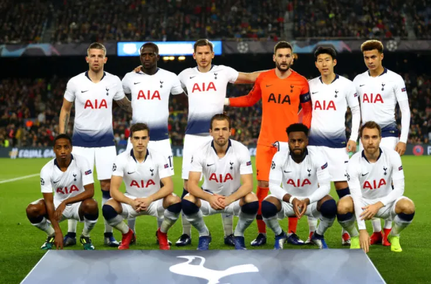
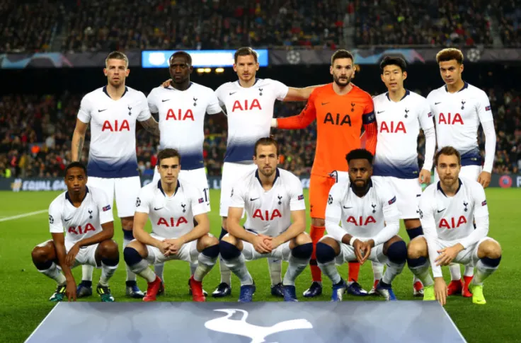

*Klikając na twarz zawodnika, przekieruje Cię do jego Instagrama*
Zawodnicy Tottenhamu Hotspur F.C.: Toby Alderweireld, Moussa Sissoko, Jan Vertonghen, Hugo Lloris, Son Heung-min, Dele Alli, Steven Bergwijn, Harry Winks, Harry Kane, Danny Rose, Christian Eriksen
Tottenham Hotspur Football Club – angielski klub piłkarski z siedzibą w londyńskiej dzielnicy Tottenham, założony w 1882 roku jako Hotspur F.C. dwukrotny mistrz Anglii, ośmiokrotny zdobywca Pucharu Anglii, zwycięzca Pucharu Zdobywców Pucharów oraz dwukrotny triumfator rozgrywek o Puchar UEFA.
Pierwszy klub w Anglii, który w XX wieku zdobył „podwójną koronę”, czyli mistrzostwo oraz krajowy puchar w jednym sezonie (1961). Odwiecznym rywalem Tottenhamu jest drużyna z sąsiedniej gminy Londynu – Arsenal. W swojej historii występów w Premier League Spurs kończyli sezon przed Arsenalem w 1993, 1995, 2017 i 2018 roku. Arsenal kwalifikował się do wszystkich edycji Ligi Mistrzów od 2005 do 2016, natomiast Tottenham pięć razy w 2010, 2016, 2017, 2018 i 2019.
-1974
-1963
-1950/1951, 1960/1961
-1921/1922, 1951/1952, 1956/1957, 1962/1963
-1900/1901, 1920/1921, 1960/1961, 1961/1962, 1966/1967, 1980/1981, 1981/1982, 1990/1991
-1986/1987
-1970/1971, 1972/1973, 1998/1999, 2007/2008
-1981/1982, 2001/2002, 2008/2009
- 1921, 1951, 1961, 1962, 1967, 1981, 1991
*Miniatury przekierowujące do strony o mnie(miniatura pierwsza) oraz do Instagramów sportowców, którym kibicuję*